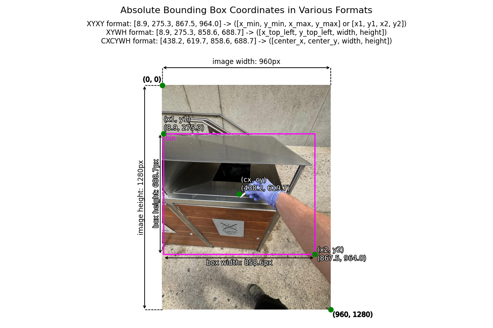
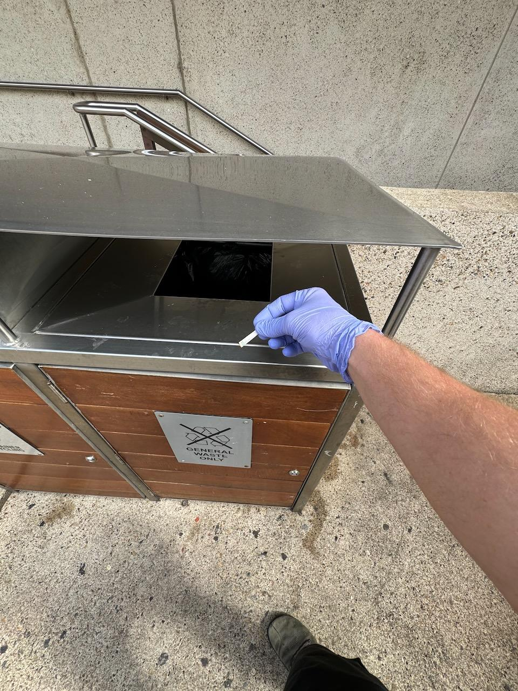
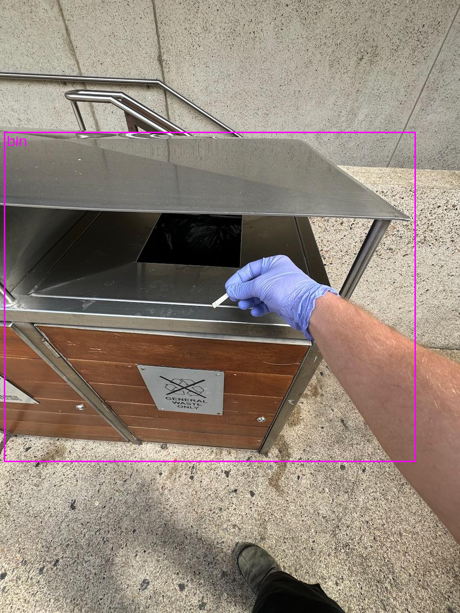
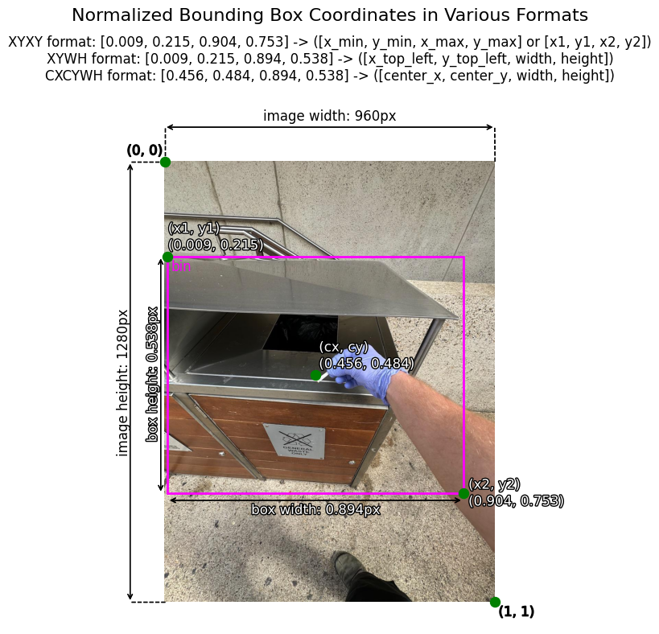

A Guide to Bounding Box Formats and How to Draw Them
One of the hardest parts of object detection is making sure your bounding boxes are in the right format. Let’s fix that.
object detection
data
computer vision
ml
ml projects
Author
Daniel Bourke
Published
February 6, 2025

By the end of this post, we’ll have replicated this plot. Extended caption: An annotated image showing a metal bin with a bounding box around it, displaying absolute bounding box coordinates in different formats (XYYX, XYWH, CXCWH). The image includes reference points, axis labels, and a gloved hand putting a piece of trash in the bin, with a background of stairs and a wall.
Note: You can run this notebook in Google Colab, however, just beware you’ll have to download the data/add an image to work with (these are available in the post).
Introduction
One of the most confusing things about getting into bounding box detection is the number of different formats that bounding boxes come in.
That’s one of the big troubles in machine learning in general: figuring out what format your data should be in.
I found this out whilst building an object detection model to power Trashify, a small app which detects bin, trash, hand and gives you a point.
My model’s loss was going down during training but the plotted boxes looked terrible.
Turns out I was trying to plot boxes in the wrong format.
In light of this, this post explores the different kinds of bounding box formats with various examples.
Let’s start by going through different bounding box formats you might come across.
All of the following examples are based on an image with the dimenions (960, 1280) or a width of 960 pixels and a height of 1280 pixels.
Specifically, we’ll be using this image (right click it download it if you’d like to follow along):

The image we’ll be using as an example throughout this post.
And all boxes assume the (0, 0) coordinate is in the top left of the image.
What is a bounding box?
The goal of an object detection model is locate an item (e.g. a person, car, licence plate, defect on a part, food on a plate) in an image.
One way to do this is to take an image, pass it through a computer vision model and then the model produces an output in the form [class_name, x_min, y_min, x_max, y_max] or [class_name, x1, y1, x2, y2] (this is two ways to write the same example format, there are more formats, we’ll see these below).
Where:
class_name = The classification of the target item (e.g. "car", "person", "banana", "piece_of_trash", this could be almost anything).
x_min = The x value of the top left corner of the box.
y_min = The y value of the top left corner of the box.
x_max = The x value of the bottom right corner of the box.
y_max = The y value of the bottom right corner of the box.
In our example, let’s say we were trying to locate the "bin" in the image.
An example bounding box output from a computer vision model might look like the following:
Absolute coordinate form: ["bin", 8.9, 275.3, 867.5, 964.0] - Values are in the same format as the width and height dimensions. For example an (x1, y1) (or (x_min, y_min)) coordinate of (8.9, 275.3) means the top left corner is 8.9 pixels in on the x-axis, and 275.3 pixels down on the y-axis. (coordinates represent pixel values on the image).
Normalized coordinate form: ["bin", 0.009, 0.215, 0.904, 0.753] - Values are between [0, 1] and are proportions of the image width and height. For example a normalized (x1, y1) (or (x_min, y_min)) coordinate of (0.009, 0.215) means the top left corner is 0.009 * image_width pixels in on the x-axis and 0.215 * image_height down on the y-axis. To convert absolute coordinates to normalized, you can divide x-axis values by the image width and y-axis values by the image height.
How to train a model to produce these outputs is the topic of another blog post, for now, let’s focus on the different bounding box formats.
Different box formats
The following table contains a non-exhaustive list of some of the most common bounding box formats you’ll come across in the wild.
Box format
Description
Absolute Example
Normalized Example
Source
XYXY
Describes the top left corner coordinates (x1, y1) as well as the bottom right corner coordinates of a box. Also referred to as: [x1, y1, x2, y2] or [x_min, y_min, x_max, y_max]
Describes the top left corner coordinates (x1, y1) as well as the width (box_width) and height (box_height) of the target box. The bottom right corners (x2, y2) are found by adding the width and height to the top left corner coordinates (x1 + box_width, y1 + box_height). Also referred to as: [x1, y1, box_width, box_height] or [x_min, y_min, box_width, box_height]
Describes the center coordinates of the bounding box (center_x, center_y) as well as the width (box_width) and height (box_height) of the target box. Also referred to as: [center_x, center_y, box_width, box_height]
Ultralytics YOLO - If you’re using a YOLO-like model such as Ultralytics YOLO, you’ll want normalizedCXCYWH ([center_x, center_y, width, height]) format.
Or if you note that someone has said their model is pre-trained on the COCO dataset, chances are the data has been formatted in XYWH format (see table above).
Note: The examples above should only be rough guides. Always read the documentation with regards to what box format you should use. Keep in mind that although box format seems like a trivial thing, having the wrong box format can be the difference between a model that works and a model that doesn’t. I’ve spent much time thinking my model was predicting poor boxes when it was actually just me plotting the wrong box format instead.
Inspecting an example bounding box
Let’s open a single bounding box annotation and check it out.
The following sample is a manually drawn bounding box using Prodigy (a labelling tool) on an image of a person picking up a piece of trash (we’ll see the image soon).
For now, let’s inspect the file.
It comes in .json format, so we can open it with Python’s json module.
Note: Not all bounding box annotations will come in JSON format, this is just an example. You may get many labels in a big text file with one annotation per line. The point is that bounding box annotations usually come separate from the actual image itself.
import json# Annotation from Prodigy (comes in XYWH format)annotations_path ="data/trashify_demo_image_annotations.json"# Open single annotation filewithopen(annotations_path, "r") as f: annotations = json.load(f)annotations
{'image_path': 'trashify_demo_image_for_box_format.jpeg',
'file_name': '7c9b2934-23bc-46c5-8e9f-c2a66948b653.jpeg',
'readme': 'Demo image for displaying box formats on. Box coordinates in annotations dict come in absolute XYWH format. Image size is in (height, width) format.',
'annotations': [{'id': '4226a4fb-12b2-4e16-b29d-b33d667048d1',
'label': 'bin',
'color': 'magenta',
'x': 8.9,
'y': 275.3,
'height': 688.7,
'width': 858.6,
'center': [438.2, 619.65],
'type': 'rect',
'points': [[8.9, 275.3], [8.9, 964], [867.5, 964], [867.5, 275.3]]}],
'image_size': [1280, 960]}
Or in raw JSON (so you can copy it if you’d like):
But we get the following: * image_path - Path to the target image (I created this myself for simplicity but in practice you might use something like a unique identifier). * file_name - A unique identifier for the image (UUID), we’d use something like this if we were to store many images in a database so they would all have different names. * readme - Information about the image format (note: not all annotations will have this, I’ve created it to help for this example). * annotations - A list of dictionaries containing various bounding box annotation(s) (in this case, only one) with a UUID for each annotation, coordinates for different points and label for the class name. * x and y - These are the top left corner coordinates of a target box ([x1, y1]). * image_size - The original size of the image on which the bounding box was drawn in [height, width] format.
Comparing our annotations object with the table of different box formats above, it looks like we can extract the absolute XYWH format from the annotations["annotations"] key.
Let’s try!
# Get annotations dictionaryannotations_dict = annotations["annotations"][0]# Extract x, y, width, heightbox_top_left_x = annotations_dict["x"]box_top_left_y = annotations_dict["y"]box_width = annotations_dict["width"]box_height = annotations_dict["height"]# Construct an array for an XYWH format boxbox_xywh = [box_top_left_x, box_top_left_y, box_width, box_height]print(f"[INFO] Box in XYWH format: {box_xywh}")
[INFO] Box in XYWH format: [8.9, 275.3, 858.6, 688.7]
Nice!
We’ve got a bounding box.
Right now it’s just numbers (we’ll get to plotting it on an image soon).
How about we try convert it to a different format?
We can do so manually, for example, by calculating how XYWH converts to XYXY or CXCYWH (this is a great exercise to try).
Where: * boxes = a torch.tensor of boxes to convert. * in_fmt = the input format of the input boxes (e.g. xyxy, xywh or cxcywh). * out_fmt = the output format of the output boxes (e.g. xyxy, xywh or cxcywh).
Let’s convert our existing box_xywh to the other formats.
import torchfrom torchvision.ops import box_convert# Convert XYWH to XYXY and CXCYWHbox_xyxy = box_convert(boxes=torch.tensor(box_xywh), in_fmt="xywh", out_fmt="xyxy")box_cxcywh = box_convert(boxes=torch.tensor(box_xywh), in_fmt="xywh", out_fmt="cxcywh")# Inspect our boxesprint(f"[INFO] Box in XYWH format: {box_xywh}")print(f"[INFO] Box in XYXY format: {[round(x, 1) for x in box_xyxy.tolist()]}") # convert the tensor back to a listprint(f"[INFO] Box in CXCYWH format: {[round(x, 1) for x in box_cxcywh.tolist()]}")
[INFO] Box in XYWH format: [8.9, 275.3, 858.6, 688.7]
[INFO] Box in XYXY format: [8.9, 275.3, 867.5, 964.0]
[INFO] Box in CXCYWH format: [438.2, 619.7, 858.6, 688.7]
Perfect, now we’ve got the same box in three different formats.
Note that these formats are all absolute pixel values.
If we wanted to convert them to normalized values, we’d have to divide each x coordinate (including the box_width) by the image width and each y coordinate (including the box_height) by the image height.
To practice, let’s now do all of the conversions above manually.
We’ll also create the normalized version of each.
Manually converting bounding box formats
Let’s start with our existing bounding box in XYWH format and convert it to XYXY and CXCYWH.
# Our current box format is XYWHprint(f"[INFO] Current box in XYWH format: {box_xywh} ([x_min, y_min, box_width, box_height])")
[INFO] Current box in XYWH format: [8.9, 275.3, 858.6, 688.7] ([x_min, y_min, box_width, box_height])
To convert from XYWH ([x_min, y_min, box_width, box_height]) to XYXY ([x_min, y_min, x_max, y_max]) we can:
x_min and y_min remain the same.
Add the box_width to x_min to create x_max.
Add the box_height to y_min to create y_max.
# Convert XYWH to XYXY (or [x_min, y_min, x_max, y_max])box_xyxy = [0, 0, 0, 0] # start with zeros# 1. x_min and y_min can remain the samebox_xyxy[0] = box_xywh[0] box_xyxy[1] = box_xywh[1]# 2. Create x_max by adding x_min to box_width box_xyxy[2] = box_xywh[0] + box_xywh[2] # 3. Create y_max by adding y_min to box_heightbox_xyxy[3] = box_xywh[1] + box_xywh[3] print(f"[INFO] Box in XYXY format: {box_xyxy}")
[INFO] Box in XYXY format: [8.9, 275.3, 867.5, 964.0]
Perfect! We get the same output as our previous conversion, except this time we did it by hand.
In practice, we’d probably avoid doing such a thing by hand and instead functionize it.
But it’s good to see how going between the different box formats can happen.
Let’s do the same for going from XYWH ([x_min, y_min, box_width, box_height]) to CXCYWH (([center_x, center_y, box_width, box_height])).
To do so, we can:
Add 0.5 * box_width to x_min to create box_center_x (we use 0.5 because the center is in the middle of the box).
Add 0.5 * box_height to y_min to create box_center_y.
The box_width and box_height can remain the same as our XYWH box.
# Convert XYWH to CXCYWH (or [center_x, center_y, width, height])box_cxcywh = [0, 0, 0, 0] # start with zeros# 1. Create box_center_x by adding 0.5 * box_width to x_minbox_center_x =round(box_xywh[0] + (0.5* box_xywh[2]), 1)box_cxcywh[0] = box_center_x# 2. Create box_center_y by adding 0.5 * box_height to y_minbox_center_y =round(box_xywh[1] + (0.5* box_xywh[3]), 1)box_cxcywh[1] = box_center_y # 3. The box_width and box_height can remain the same as our XYWH boxbox_cxcywh[2] = box_xywh[2]box_cxcywh[3] = box_xywh[3]print(f"[INFO] Box in CXCYWH format: {box_cxcywh}")
[INFO] Box in CXCYWH format: [438.2, 619.7, 858.6, 688.7]
Beautiful!
We get the same coordinates for our CXCYWH box converting by hand as we did previously.
Again, for future use we’d probably functionize this to automatically go between different box formats.
Creating normalized bounding box coordinates
All of our box coordinates so far have been in absolute format (exact pixel values such as 438.2).
However, sometimes we’ll find our boxes in normalized format.
Normalized format means that the values are: * In the range [0, 1]. * x coordinates have been divided by the image width. * y coordinates have been divided by the image height. * box_width has been divided by the image width. * box_height has been divided by the image height.
Let’s start by importing an image and getting its height and width.
from PIL import Image # Image is a sample image from Trashify project: https://huggingface.co/spaces/mrdbourke/trashify_demo_v3 image_path ="data/trashify_demo_image_for_box_format.jpeg"# Open the imageimage = Image.open(image_path)# Get the image dimensionsimg_width, img_height = image.size # PIL.Image.size comes in (width, height) order print(f"[INFO] Image width, height: {img_width, img_height}")# Display the imageimage
[INFO] Image width, height: (960, 1280)
Wonderful!
It looks like someone is picking up a piece of trash and putting it in a bin (the image is from the Trashify project to detect when someone is putting a piece of trash in the bin).
We’ll plot a bounding box on our image soon.
For now, we’ve also got our image width (960 pixels) and image height (1260 pixels).
We can use these dimensions to create our normalized coordinates.
To do so, we’ll:
Divide x coordinates by the image width.
Divide y coordinates by the image height.
Divide box_width by the image width.
Divide box_height by the image height.
We’ll round all values to 3 decimal places (to prevent values of 0.009270833333333334, this is less precise but looks cleaner).
# 1. Divide x coordiantes by the image widthbox_top_left_x_normalized =round(box_top_left_x / img_width, 3)box_bottom_right_x_normalized =round((box_top_left_x + box_width) / img_width, 3) # (x_min + box_width) / img_widthbox_center_x_normalized =round(box_center_x / img_width, 3)# 2. Divide y coordinates by the image heightbox_top_left_y_normalized =round(box_top_left_y / img_height, 3)box_bottom_right_y_normalized =round((box_top_left_y + box_height) / img_height, 3) # (y_min + box_height) / img_heightbox_center_y_normalized =round(box_center_y / img_height, 3)# 3. Divide box_width by the image widthbox_width_normalized =round(box_width / img_width, 3)# 4. Divide box_height by the image heightbox_height_normalized =round(box_height / img_height, 3)print(f"[INFO] Box x coordinates normalized:")print(f"[INFO] Box top left x normalized (x_min): {box_top_left_x_normalized}")print(f"[INFO] Box bottom right x normalized (x_max): {box_bottom_right_x_normalized}")print(f"[INFO] Box center x normalized (center_x): {box_center_x_normalized}\n")print(f"[INFO] Box y coordinates normalized:")print(f"[INFO] Box top left y normalized (y_min): {box_top_left_y_normalized}")print(f"[INFO] Box bottom right y normalized (y_max): {box_bottom_right_y_normalized}")print(f"[INFO] Box center y normalized (center_y): {box_center_y_normalized}\n")print(f"[INFO] Box height and width normalized:")print(f"[INFO] Box width normalized: {box_width_normalized}")print(f"[INFO] Box height normalized: {box_height_normalized}")
[INFO] Box x coordinates normalized:
[INFO] Box top left x normalized (x_min): 0.009
[INFO] Box bottom right x normalized (x_max): 0.904
[INFO] Box center x normalized (center_x): 0.456
[INFO] Box y coordinates normalized:
[INFO] Box top left y normalized (y_min): 0.215
[INFO] Box bottom right y normalized (y_max): 0.753
[INFO] Box center y normalized (center_y): 0.484
[INFO] Box height and width normalized:
[INFO] Box width normalized: 0.894
[INFO] Box height normalized: 0.538
Outstanding!
Using these normalized coordinates, let’s create normalized versions of our XYWH, XYXY and CXCYWH boxes.
Use matplotlib.patches.Rectangle, which takes in an anchor point xy (e.g. the top left corner coordinates of a box) as well as a width and height parameter of how big the box is. We can add text to our matplotlib plot via matplotlib.pyplot.text.
Use torch.utils.draw_bounding_boxes which takes in an image tensor and boxes in the form XYXY ([x_min, y_min, x_max, y_max]).
How about we try each?
First we’ll set up a couple of variables we can reuse.
# Get the box label from the annotations dictionarybox_label = annotations_dict["label"]# Get the box colour from the annotations dictionarybox_colour = annotations_dict["color"]print(f"[INFO] Box lable: {box_label}")print(f"[INFO] Box colour: {box_colour}")
[INFO] Box lable: bin
[INFO] Box colour: magenta
Drawing a good bounding box with PIL
Let’s use the PIL.ImageDraw.rectangle method to draw a box on our PIL.Image.
from PIL import Image, ImageDraw, ImageFont# Image is a sample image from Trashify project: https://huggingface.co/spaces/mrdbourke/trashify_demo_v3 image_path ="data/trashify_demo_image_for_box_format.jpeg"# Open the imageimage = Image.open(image_path)# Create a draw object and get the image font draw = ImageDraw.Draw(image)font = ImageFont.load_default(size=30)# The rectangle method takes boxes in XYXY formatprint(f"[INFO] Drawing box: {box_xyxy} (XYXY), label: {box_label}")draw.rectangle( xy=box_xyxy, outline=box_colour, width=3)# Add text to the box to showcase the label namedraw.text( xy=(box_top_left_x +5, box_top_left_y), text=box_label, fill=box_colour, font=font)del drawimage
[INFO] Drawing box: [8.9, 275.3, 867.5, 964.0] (XYXY), label: bin

Nice! Looks like the bounding box fits the bin nicely.
Now wouldn’t it be also good to visualize some of the coordinates we’ve been working with on the box?
Drawing a poor bounding box with PIL
Now what if we passed in the wrong box format to our drawing code?
For example, we tried to plot a box in CXCYWH format instead of XYXY?
from PIL import Image, ImageDraw, ImageFont# Image is a sample image from Trashify project: https://huggingface.co/spaces/mrdbourke/trashify_demo_v3 image_path ="data/trashify_demo_image_for_box_format.jpeg"# Open the imageimage = Image.open(image_path)# Create a draw object and get the image font draw = ImageDraw.Draw(image)font = ImageFont.load_default(size=30)# The rectangle method takes boxes in XYXY format but let's see what happens when we use CXCYWHprint(f"[INFO] Drawing box: {box_cxcywh} (CXCYWH), label: {box_label}")draw.rectangle( xy=box_cxcywh, outline=box_colour, width=3)# Add text to the box to showcase the label name (we'll make sure this is CXCYWH too)draw.text( xy=(box_center_x +5, box_center_y), text=box_label, fill=box_colour, font=font)del drawimage
[INFO] Drawing box: [438.2, 619.7, 858.6, 688.7] (CXCYWH), label: bin
Oh no!
That box doesn’t look very good…
It’s the same box as before but in a different format (CXCYWH rather than XYXY).
This is a great example of how a slight format change can make you believe that the boxes you’re plotting are of poor quality.
Keep this in mind the next time you’re bounding boxes aren’t looking correct, ask yourself, are they in the right format?
Drawing bounding boxes with maptlotlib
Time to get a bit more creative.
Let’s draw the same bounding box as above, except this time we’ll add a bit more information about the box.
Things such as box_height, box_width, coordinates and more.
How about we combine all of these and make a nice annotated plot of our bounding box?
Note: All coordinates in the following plots/images are listed in (x, y) format. Meaning the x-value comes first, followed by the y-value. Also, the following plot(s) took a fairly large amount of trial and error to get looking just right. So don’t worry too much if it takes you a while to replicate something similar.
First, we’ll create some values we can reuse.
# Set sizing and colour optionsCIRCLE_SIZE =75CIRCLE_COLOUR ="green"
And now let’s make an epic plot!
Code
import matplotlib.pyplot as pltimport matplotlib.patches as patchesfrom matplotlib import patheffectsfrom PIL import Imageimport numpy as np# Read imageimg = Image.open(image_path)img_width, img_height = img.sizeimg_array = np.array(img)# Create figure and axis with larger figure sizefig, ax = plt.subplots(figsize=(12, 8))# Display the imageax.imshow(img_array)# Add padding around the image (in pixels)padding =150ax.set_xlim(-padding, img_array.shape[1] + padding)# Create rectangle patchrect = patches.Rectangle( (box_top_left_x, box_top_left_y), box_width, box_height, linewidth=2, edgecolor=box_colour, facecolor='none')# Add rectangle to plotax.add_patch(rect)### Add height/width image measurement lines #### Draw stretching lines from corners to measurement zone# Style for dashed linesdash_style = {'color': 'black','linestyle': '--','linewidth': 1,'path_effects': [patheffects.withStroke(linewidth=1, foreground='black')]}# Draw horizontal extension linesleft_x =-100# Position in padding zoneax.plot( [0, left_x], [0, 0],**dash_style)ax.plot( [0, left_x], [img_height, img_height],**dash_style)# Draw vertical extension linestop_y =-100# Position in padding zoneax.plot( [0, 0], [0, top_y],**dash_style)ax.plot( [img_width, img_width-1], [0, top_y],**dash_style)# Draw measurement arrows in padding zone# Vertical measurementax.annotate('', xy=(left_x, img_height), xytext=(left_x, 0), arrowprops=dict( arrowstyle='<->', color='black', linewidth=1, path_effects=[patheffects.withStroke(linewidth=1, foreground='black')] ))# Horizontal measurementax.annotate('', xy=(img_width, top_y), xytext=(0, top_y), arrowprops=dict( arrowstyle='<->', color='black', linewidth=1, path_effects=[patheffects.withStroke(linewidth=1, foreground='black')] ))# -> Add measurement labels# Image height textax.text(-140, # x pos img_height/2, # y posf'image height: {img_height}px', rotation=90, verticalalignment='center', fontsize=12, color='black',# path_effects=[patheffects.withStroke(linewidth=1, foreground='black')])# Image width textax.text( img_width/2, # x pos-120, # y posf'image width: {img_width}px', horizontalalignment='center', fontsize=12, color='black',# path_effects=[patheffects.withStroke(linewidth=1, foreground='black')])### End: Add height/width image measurement lines ###### Image corner circles #### Add circle using scatter plot - (0, 0) ax.scatter( [0], [0], color=CIRCLE_COLOUR, # Circle color s=CIRCLE_SIZE, # Size of circle zorder=5# Make sure it's drawn on top)# Add circle using scatter plot - (img_width, img_height) ax.scatter( [img_width], [img_height], color=CIRCLE_COLOUR, # Circle color s=CIRCLE_SIZE, # Size of circle zorder=5# Make sure it's drawn on top)# Add coordinates text to 0, 0ax.text(-110, -20,f"(0, 0)", color='black', fontsize=12, path_effects=[ patheffects.withStroke( linewidth=1, foreground='black' ) ])# Add coordinates text to img_width, img_heightax.text( img_width +10, img_height +40,f"({img_width}, {img_height})", color='black', fontsize=12, path_effects=[ patheffects.withStroke( linewidth=1, foreground='black' ) ])### END: Image corner circles ################################ Start: Box stroke drawings #### Draw width measurement lineoffset =20# pixels offset from the box# Draw the width arrowax.annotate('', xy=(box_top_left_x + box_width, box_top_left_y + box_height + offset), # arrow head xytext=(box_top_left_x, box_top_left_y + box_height + offset), # arrow tail arrowprops=dict( arrowstyle='<->', color='black', linewidth=1, path_effects=[patheffects.withStroke(linewidth=1, foreground='black')] ))# Add width labelax.text( box_top_left_x + box_width/2, # center of width box_top_left_y + box_height + offset +40, # above the arrowf'box width: {box_width}px', color='white', fontsize=12, horizontalalignment='center', path_effects=[patheffects.withStroke(linewidth=2, foreground='black')])# Draw height measurement lineoffset_x =20# pixels offset from the box# Draw the height arrowax.annotate('', xy=(box_top_left_x - offset_x, box_top_left_y + box_height), # arrow head xytext=(box_top_left_x - offset_x, box_top_left_y), # arrow tail arrowprops=dict( arrowstyle='<->', color='black', linewidth=1, path_effects=[patheffects.withStroke(linewidth=1, foreground='black')] ))# Add box height labelax.text( box_top_left_x - offset_x -45, # left of the arrow box_top_left_y + box_height/2, # center of heightf'box height: {box_height}px', color='white', fontsize=12, verticalalignment='center', rotation=90, path_effects=[patheffects.withStroke(linewidth=2, foreground='black')])# Add box label annotationax.text( box_top_left_x +10, box_top_left_y +40, box_label, color=box_colour, fontsize=12,)### End: Box stroke drawings ###### Box Corner circles #### Add circle using scatter plot - (x1, y1)ax.scatter( [box_top_left_x], [box_top_left_y], color=CIRCLE_COLOUR, # Circle color s=CIRCLE_SIZE, # Size of circle zorder=5# Make sure it's drawn on top)# Add circle using scatter plot - (x2, y2) ax.scatter( [box_top_left_x + box_width], [box_top_left_y + box_height], color=CIRCLE_COLOUR, # Circle color s=CIRCLE_SIZE, # Size of circle zorder=5# Make sure it's drawn on top)# Add coordinates text to x1, y1ax.text(0+10, box_top_left_y -20,f"(x1, y1)\n({box_top_left_x}, {box_top_left_y})", color='white', fontsize=12, path_effects=[ patheffects.withStroke( linewidth=2, foreground='black' ) ])# Add coordinates text to x2, y2ax.text( box_top_left_x + box_width +15, box_top_left_y + box_height +35,f"(x2, y2)\n({box_top_left_x + box_width}, {box_top_left_y + box_height})", color='white', fontsize=12, path_effects=[ patheffects.withStroke( linewidth=2, foreground='black' ) ])### End: Box Corner Circles ###### Start: Box Center Circle #### Add circle using scatter plot - (cx, cy)ax.scatter( [box_center_x], [box_center_y], color=CIRCLE_COLOUR, # Circle color s=CIRCLE_SIZE, # Size of circle zorder=5# Make sure it's drawn on top)# Add coordinates text to x1, y1ax.text( box_center_x +10, box_center_y -20,f"(cx, cy)\n({box_center_x}, {box_center_y})", color='white', fontsize=12, path_effects=[ patheffects.withStroke( linewidth=2, foreground='black' ) ])### End: Box Center Circles #### Remove axesax.set_axis_off()plt.suptitle("""Absolute Bounding Box Coordinates in Various Formats""", fontsize=16)plt.title(f"""XYXY format: {box_xyxy} -> ([x_min, y_min, x_max, y_max] or [x1, y1, x2, y2])XYWH format: {box_xywh} -> ([x_top_left, y_top_left, width, height])CXCYWH format: {box_cxcywh} -> ([center_x, center_y, width, height])""")# Adjust layout to ensure everything fitsplt.tight_layout()# Save the plotplt.savefig("images/absolute_bounding_box_coordinates_plot.png")# Show plotplt.show()
Woah! Now that’s a well-informed bounding box plot.
Notice how each of the different bounding box formats could be plotted.
From XYXY using the top left and bottom right green corners.
To CXCYWH using the center point as well as the width and height of the bounding box.
How about we reproduce the same plot, except this time we’ll use the normalized coordinates of the boxes?
First, we’ll remind ourselves of the normalized coordinates (like all good machine learning cooking shows, we prepared these earlier).
Now time to replicate the plot above, except this time with normalized values.
Code
# Create figure and axis with larger figure sizefig, ax = plt.subplots(figsize=(12, 8))# Display the imageax.imshow(img_array)# Add padding around the image (in pixels)padding =150ax.set_xlim(-padding, img_array.shape[1] + padding)# Create rectangle patchrect = patches.Rectangle( (box_top_left_x, box_top_left_y), box_width, box_height, linewidth=2, edgecolor=box_colour, facecolor='none')# Add rectangle to plotax.add_patch(rect)### Add height/width image measurement lines #### Draw stretching lines from corners to measurement zone# Style for dashed linesdash_style = {'color': 'black','linestyle': '--','linewidth': 1,'path_effects': [patheffects.withStroke(linewidth=1, foreground='black')]}# Draw horizontal extension linesleft_x =-100# Position in padding zoneax.plot( [0, left_x], [0, 0],**dash_style)ax.plot( [0, left_x], [img_height, img_height],**dash_style)# Draw vertical extension linestop_y =-100# Position in padding zoneax.plot( [0, 0], [0, top_y],**dash_style)ax.plot( [img_width, img_width-1], [0, top_y],**dash_style)# Draw measurement arrows in padding zone# Vertical measurementax.annotate('', xy=(left_x, img_height), xytext=(left_x, 0), arrowprops=dict( arrowstyle='<->', color='black', linewidth=1, path_effects=[patheffects.withStroke(linewidth=1, foreground='black')] ))# Horizontal measurementax.annotate('', xy=(img_width, top_y), xytext=(0, top_y), arrowprops=dict( arrowstyle='<->', color='black', linewidth=1, path_effects=[patheffects.withStroke(linewidth=1, foreground='black')] ))# -> Add measurement labels# Image height textax.text(-140, # x pos img_height/2, # y posf'image height: {img_height}px', rotation=90, verticalalignment='center', fontsize=12, color='black',# path_effects=[patheffects.withStroke(linewidth=1, foreground='black')])# Image width textax.text( img_width/2, # x pos-120, # y posf'image width: {img_width}px', horizontalalignment='center', fontsize=12, color='black',# path_effects=[patheffects.withStroke(linewidth=1, foreground='black')])### End: Add height/width image measurement lines ###### Image corner circles #### Add circle using scatter plot - (0, 0) ax.scatter( [0], [0], color=CIRCLE_COLOUR, # Circle color s=CIRCLE_SIZE, # Size of circle zorder=5# Make sure it's drawn on top)# Add circle using scatter plot - (img_width, img_height) ax.scatter( [img_width], [img_height], color=CIRCLE_COLOUR, # Circle color s=CIRCLE_SIZE, # Size of circle zorder=5# Make sure it's drawn on top)# Add coordinates text to 0, 0ax.text(-110, -20,f"(0, 0)", color='black', fontsize=12, path_effects=[ patheffects.withStroke( linewidth=1, foreground='black' ) ])# Add coordinates text to img_width, img_heightax.text( img_width +10, img_height +40,f"(1, 1)", color='black', fontsize=12, path_effects=[ patheffects.withStroke( linewidth=1, foreground='black' ) ])### END: Image corner circles ################################ Start: Box stroke drawings #### Draw width measurement lineoffset =20# pixels offset from the box# Draw the width arrowax.annotate('', xy=(box_top_left_x + box_width, box_top_left_y + box_height + offset), # arrow head xytext=(box_top_left_x, box_top_left_y + box_height + offset), # arrow tail arrowprops=dict( arrowstyle='<->', color='black', linewidth=1, path_effects=[patheffects.withStroke(linewidth=1, foreground='black')] ))# Add width labelax.text( box_top_left_x + box_width/2, # center of width box_top_left_y + box_height + offset +40, # above the arrowf'box width: {box_width_normalized}px', color='white', fontsize=12, horizontalalignment='center', path_effects=[patheffects.withStroke(linewidth=2, foreground='black')])# Draw height measurement lineoffset_x =20# pixels offset from the box# Draw the height arrowax.annotate('', xy=(box_top_left_x - offset_x, box_top_left_y + box_height), # arrow head xytext=(box_top_left_x - offset_x, box_top_left_y), # arrow tail arrowprops=dict( arrowstyle='<->', color='black', linewidth=1, path_effects=[patheffects.withStroke(linewidth=1, foreground='black')] ))# Add box height labelax.text( box_top_left_x - offset_x -45, # left of the arrow box_top_left_y + box_height/2, # center of heightf'box height: {box_height_normalized}px', color='white', fontsize=12, verticalalignment='center', rotation=90, path_effects=[patheffects.withStroke(linewidth=2, foreground='black')])# Add box label annotationax.text( box_top_left_x +10, box_top_left_y +40, box_label, color=box_colour, fontsize=12,)### End: Box stroke drawings ###### Box Corner circles #### Add circle using scatter plot - (x1, y1)ax.scatter( [box_top_left_x], [box_top_left_y], color=CIRCLE_COLOUR, # Circle color s=CIRCLE_SIZE, # Size of circle zorder=5# Make sure it's drawn on top)# Add circle using scatter plot - (x2, y2) ax.scatter( [box_top_left_x + box_width], [box_top_left_y + box_height], color=CIRCLE_COLOUR, # Circle color s=CIRCLE_SIZE, # Size of circle zorder=5# Make sure it's drawn on top)# Add coordinates text to x1, y1ax.text(0+10, box_top_left_y -20,f"(x1, y1)\n({box_top_left_x_normalized}, {box_top_left_y_normalized})", color='white', fontsize=12, path_effects=[ patheffects.withStroke( linewidth=2, foreground='black' ) ])# Add coordinates text to x2, y2ax.text( box_top_left_x + box_width +15, box_top_left_y + box_height +35,f"(x2, y2)\n({box_bottom_right_x_normalized}, {box_bottom_right_y_normalized})", color='white', fontsize=12, path_effects=[ patheffects.withStroke( linewidth=2, foreground='black' ) ])### End: Box Corner Circles ###### Start: Box Center Circle #### Add circle using scatter plot - (cx, cy)ax.scatter( [box_center_x], [box_center_y], color=CIRCLE_COLOUR, # Circle color s=CIRCLE_SIZE, # Size of circle zorder=5# Make sure it's drawn on top)# Add coordinates text to x1, y1ax.text( box_center_x +10, box_center_y -20,f"(cx, cy)\n({box_center_x_normalized}, {box_center_y_normalized})", color='white', fontsize=12, path_effects=[ patheffects.withStroke( linewidth=2, foreground='black' ) ])### End: Box Center Circles #### Remove axesax.set_axis_off()# Add super title and titleplt.suptitle("""Normalized Bounding Box Coordinates in Various Formats""", fontsize=16)plt.title(f"""XYXY format: {box_xyxy_normalized} -> ([x_min, y_min, x_max, y_max] or [x1, y1, x2, y2])XYWH format: {box_xywh_normalized} -> ([x_top_left, y_top_left, width, height])CXCYWH format: {box_cxcywh_normalized} -> ([center_x, center_y, width, height])""")# Adjust layout to ensure everything fitsplt.tight_layout()# Save the plotplt.savefig("images/normalized_bounding_box_coordinates_plot.png")# Show plotplt.show()

Beautiful!
Notice how this time the bottom right corner of the image is at coordinate (1, 1)?
This is because thanks to normalization, all values are now proportions of the image height and image width.
Drawing bounding boxes with torchvision
If you’re building an object dectection model with torch and torchvision, it can be handy to be able to draw boxes on your images directly with torchvision.
To do so, we can use torchvision.utils.draw_bounding_boxes, this method requires boxes in XYXY format and returns a torch.tensor (don’t worry, we can convert this to back to an image).
Some things to note:
torchvision expects our boxes and image to be in torch.tensor format.
We could plot our XYXY formatted box directly but for practice, let’s start with our XYWH format box, convert it to XYXY using torchvision.ops.box_convert and then draw the image with the bounding box.
Sound convoluted?
Well… we’re only converting an image to a tensor, drawing boxes on that tensor and then converting the tensor back to an image.
Easy!
C’mon, let’s do it.
import torchfrom torchvision.ops import box_convertfrom torchvision.utils import draw_bounding_boxesfrom torchvision.transforms.functional import pil_to_tensor, to_pil_image from PIL import ImageFont# Image is a sample image from Trashify project: https://huggingface.co/spaces/mrdbourke/trashify_demo_v3 image_path ="data/trashify_demo_image_for_box_format.jpeg"# Open the imageimage = Image.open(image_path)# Get box coordinates in tensor formbox_xywh = torch.tensor(box_xywh)print(f"[INFO] Box in XYWH format: {box_xywh}")# Convert boxes from XYWH -> XYXY # torchvision.utils.draw_bounding_boxes requires input boxes in XYXY format (x_min, y_min, x_max, y_max)box_xyxy = box_convert(boxes=box_xywh, in_fmt="xywh", out_fmt="xyxy")print(f"[INFO] Box XYXY: {box_xyxy}")# Draw the image as a tensor and then turn it into a PIL imageto_pil_image( pic=draw_bounding_boxes( image=pil_to_tensor(pic=image), boxes=box_xyxy.unsqueeze(0), # requires at least one extra dimension (e.g. [[x_min, y_min, x_max, y_max]]) colors=[box_colour], # all parameters are expected in a list/tensor format labels=[box_label], width=3,# font=font_filename, # you can manually asign a font otherwise `PIL.ImageFont.load_default()` is used font_size=30, label_colors=[box_colour] ))
We get another image with a bounding box drawn on it, this time done with torch and torchvision (which use PIL.ImageDraw behind the scenes).
Summary and extra resources
We’ve now been hands-on with six different formats of bounding boxes:
Absolute XYXY.
Absolute XYWH.
Absolute CXCYWH.
Normalized XYXY.
Normalized XYWH.
Normalized CXCYWH.
There are probably more formats out there that I’ve missed.
But these should get you pretty far.
And now you’ve got the skills to interporlate through various forms on your own!
We also drew boxes on images in three different ways: using PIL, using matplotlib and using torchvision.
For more on bounding boxes, I’d recommend the following:
For a similar guide to this one plus some information on bounding box augmentation (when you use data augmentation on object detection images, you need to be sure to augment the box too), see the fantastic guide from the Albumentations library.
Finally, it’s good practice to try out what we’ve done on your own images.
So perhaps pick an image of your own, draw a box on it with a labelling tool (or in Photoshop or just by estimating pixel counts) and then plot it several different ways.
{kind=link}